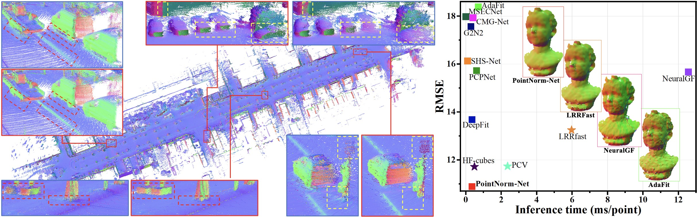
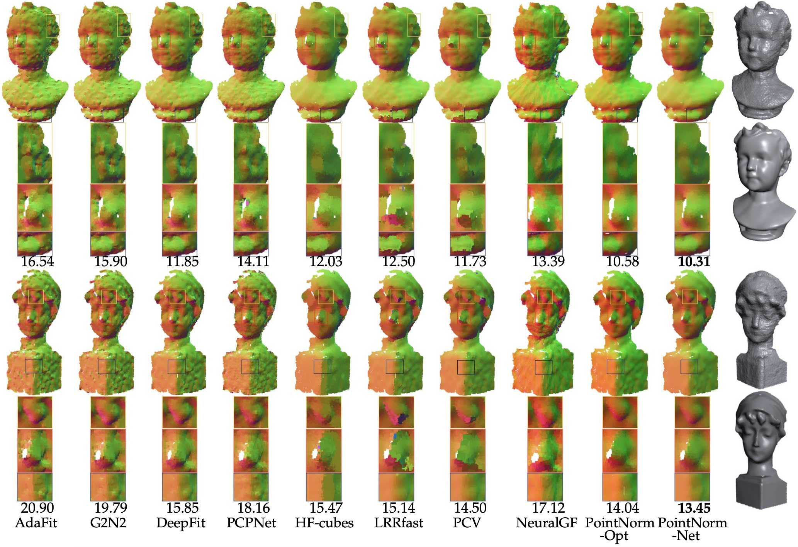
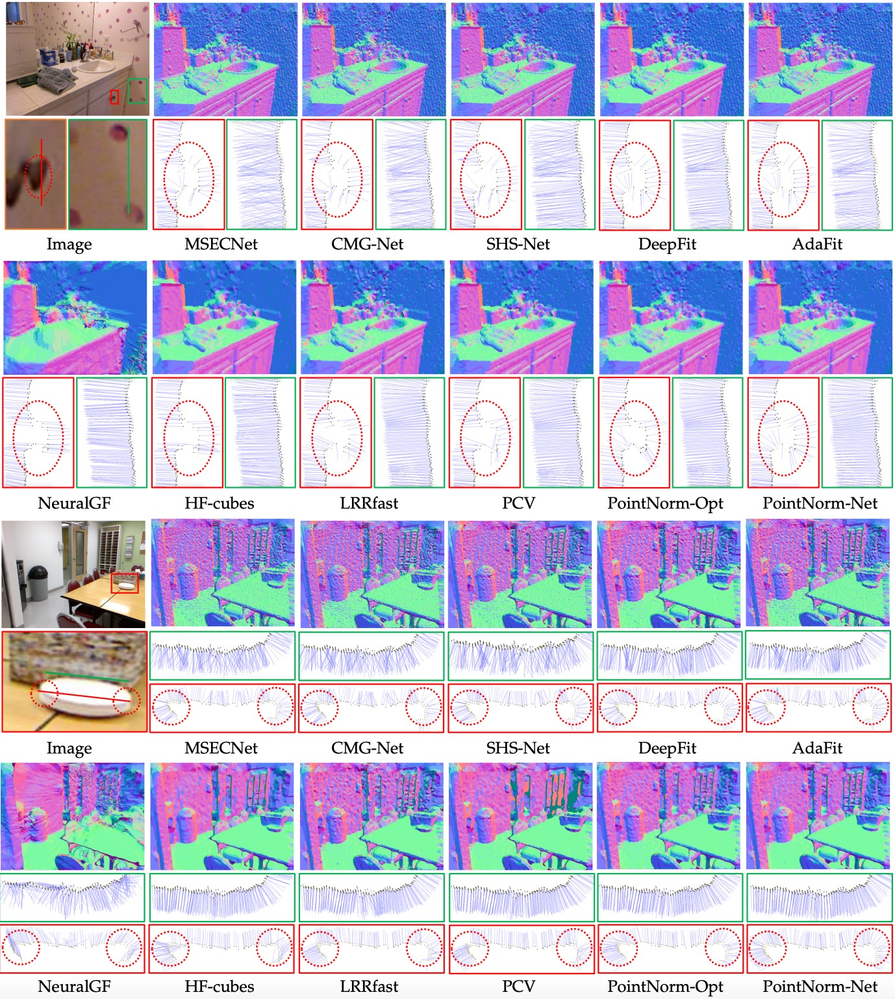
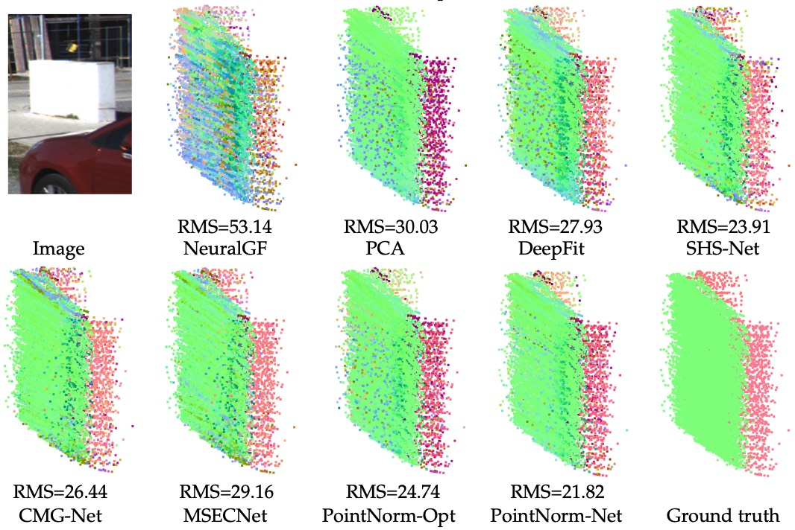
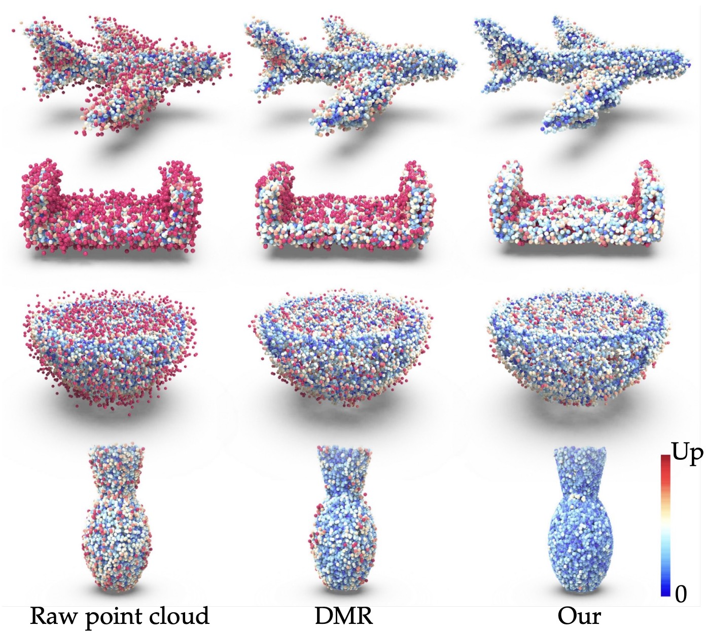

Jie Zhang 1, Minghui Nie 2, Changqing Zou 3, Jian Liu 4, Ligang Liu 5 and Junjie Cao 6
1Liaoning Normal University
2Jiangnan University
3Zhejiang University
4Shenyang University of Technology
5University of Science and Technology of China
6Dalian University of Technology
IEEE Transactions on Pattern Analysis and Machine Intelligence (TPAMI2025)
Although supervised deep normal estimators have recently shown impressive results on synthetic benchmarks, their performance deteriorates significantly in real-world scenarios due to the domain gap between synthetic and real data. Building high-quality real training data to boost those supervised methods is not trivial because point-wise annotation of normals for varying-scale real-world 3D scenes is a tedious and expensive task. This paper introduces PointNorm-Net, the first self-supervised deep learning framework to tackle this challenge. The key novelty of PointNorm-Net is a three-stage multi-modal normal distribution estimation paradigm that can be integrated into either deep or traditional optimization-based normal estimation frameworks. Extensive experiments show that our method achieves superior generalization and outperforms state-of-the-art conventional and deep learning approaches across three real-world datasets that exhibit distinct characteristics compared to the synthetic training data.
A large number of deep neural networks have been proposed for accurate normal estimation, and these networks outperform conventional methods on synthesized benchmark datasets. However, their performance on raw point clouds drops significantly because they are not trained with real data and there exists a domain gap between real and synthetic data. It is not easy to accurately annotate point-wise normals for the noisy data from various sources, which makes them less accessible for supervised learning. Conventional normal estimators are data-independent. However it is widely known that they usually generate over-smoothed results or required a long computation time, as illustrated in Fig. 1. It is essential to design a more powerful and general normal estimation method for raw point clouds scanned by different 3D scanners without having to rely on costly normal annotations. This paper proposes PointNorm-Net, the first self-supervised deep method, for normal estimation. PointNorm-Net is designed based on a "ground-truth sampling" property that we established. This property states that given a smooth underlying surface and zero-mean noise, the ground-truth normal of a query point is the expectation of a set of randomly sampled candidate normals.
The proposed PointNorm-Net combines a patch-based deep normal predictor with a training scheme empowered by an effective three-stage multimodal distribution estimation paradigm. Based on a multi-sample consensus scheme defined for local surface regions, the proposed three-stage multi-modal distribution estimation paradigm offers the predictor feasible candidate normals and training losses. These losses make the network learn the major mode of the distribution from numerous similar patches in training data, endowing the method with better generalization and scalability. During inference, there is only a forward pass of the network, thus ensuring efficiency.

Fig. 1: PointNorm-Net demonstrates better performance in comparison to traditional optimization-based methods and supervised deep normal estimators when dealing with real-world point cloud datasets, such as LiDAR sequence 06 of KITTI (left) and the PCV Kinect dataset (right). The normal orientations are color-coded. On the left side, the estimated normals generated by DeepFit and PointNorm-Net are illustrated and zoomed in the blue and red boxes respectively for quality comparison. In contrast to the SOTA deep learning based approach DeepFit, PointNorm-Net can better preserve sharp features and tiny structures while eliminating scanning noise more effectively. On the right side, the accuracy versus efficiency plot and 4 results on the PCV dataset indicate that PointNorm-Net is as fast as supervised deep methods, yet achieves much better accuracy.

Fig. 2: Visual comparison of estimated normals on two statues scanned by Kinect from PCV. Supervised deep normal estimators suffer from the scanner noise, i.e. the small fluctuations in smooth regions. The conventional methods can handle the fluctuations but may introduce artifacts around sharp features. PointNorm-Net works well for both two cases. The statues scanned by a high-precision Artec SpiderTM scanner and a Kinect are shown in the rightmost column respectively. The point normal vectors are mapped to RGB colors. Numbers show RMS of the results.

Fig. 3: Visual comparison of estimated normals on two scanned scenes from NYUV2. After performing unoriented normal estimation, we flip normals according to the camera position. Colors encode the direction of oriented normals. SHS-Net, MSECNet, CMG-Net, AdaFit, and DeepFit can not suppress scanner noise, refer to the plane regions, such as walls and upper surfaces of tables. HF-cubes, LRRfast and PCV may fail to preserve tiny structures. PointNorm-Net overcomes these challenges.

Fig. 4: PointNorm-Net identifies more geometry structures with higher quality on KITTI dataset.

Fig. 5: More visually pleasing surfaces are generated by the proposed denoising method (DMR+CPI+Lccp+FCF) than the baseline method: DMR. The colors, from blue to red, encode the P2S error.
@article{zhang2025pointnorm,
title={PointNorm-Net: Self-Supervised Normal Prediction of 3D Point Clouds via Multi-Modal Distribution Estimation},
author={Jie Zhang, Minghui Nie, Changqing Zou, Jian Liu, Ligang Liu and Junjie Cao},
journal={IEEE Transactions on Pattern Analysis and Machine Intelligence},
year={2025}
}
Page last updated: This page was last updated: 10/4/2025.